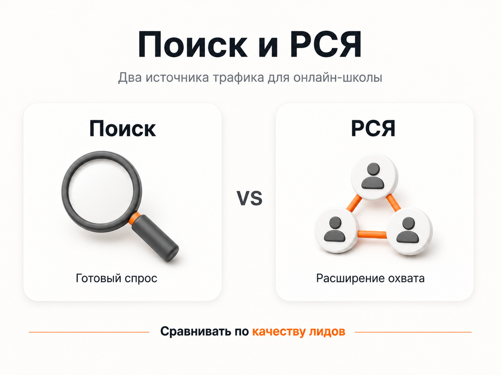
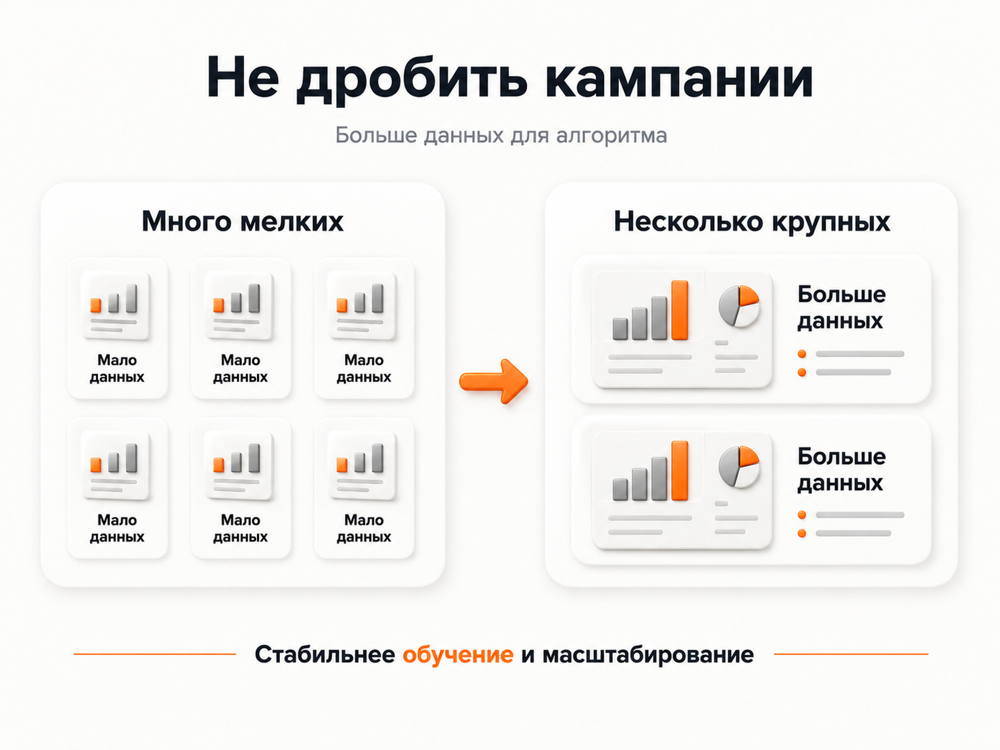

Блог о платном трафике
Настройка рекламы онлайн-школы: как получать заявки и продажи
Настройка рекламы онлайн-школы начинается не с создания кампании в Яндекс Директе. Сначала нужно определить, что именно продает школа, кому, через какую воронку и какое действие пользователя действительно связано с выручкой.
Для одного проекта результатом будет покупка курса сразу с лендинга. Для другого - регистрация на бесплатный урок, вебинар или мини-курс с последующим прогревом. Для третьего - запуск Telegram-бота, после которого человек проходит несколько этапов до оплаты.
Из-за этого одинаковая рекламная настройка для разных онлайн-школ редко работает. Нужно собирать связку:
аудитория → рекламное предложение → посадочная страница → целевое действие → прогрев → продажа → аналитика.
Сам рекламный кабинет - только одна часть этой системы.
С чего начать настройку рекламы онлайн-школы
Первое, что я определяю перед запуском - какое действие мы собираемся покупать у рекламной системы.
У онлайн-школ обычно встречаются три основные модели.
| Модель | Куда ведем рекламу | Что считаем первичной конверсией |
|---|---|---|
| Прямая продажа | Страница курса | Покупка или заявка на обучение |
| Продажа через консультацию | Лендинг программы | Заявка, запись на консультацию |
| Воронка через бесплатный продукт | Урок, вебинар, мини-курс, бот | Регистрация или запуск воронки |
Третья модель распространена особенно широко. Человеку проще сначала получить бесплатный урок, программу, диагностику или полезный материал, чем сразу оплатить обучение.
Но здесь появляется важная проблема: дешевая регистрация еще не означает хорошую рекламу.
Допустим, одна рекламная связка дает регистрации по 200 рублей, а другая по 350 рублей. По CPL первая кажется лучше. Но если из первой практически никто не покупает обучение, а из второй регулярно приходят оплаты, реальная экономика будет противоположной.
Поэтому до запуска желательно понимать хотя бы базовую цепочку:
расход → регистрации → квалифицированные лиды → продажи → выручка.
Чем дальше удается проследить пользователя по этой цепочке, тем точнее можно управлять рекламой.

Не начинайте с рекламного кабинета
До запуска я проверяю четыре вещи:
- Есть ли понятное предложение для конкретной аудитории.
- Соответствует ли посадочная страница рекламе.
- Настроена ли Яндекс Метрика и необходимые цели.
- Понимаем ли мы, какое действие использовать для оптимизации.
Это особенно важно сейчас, когда значительную часть закупки трафика выполняют алгоритмы Яндекс Директа.
В Единой перфоманс-кампании можно управлять рекламой на Поиске, в РСЯ и других доступных местах размещения. На уровне групп доступны автотаргетинг, тематические слова, интересы, сегменты аудитории и другие сигналы.
Алгоритм может хорошо выполнять поставленную задачу. Проблема возникает, если сама задача поставлена неправильно.
Если оптимизировать рекламу на легкое действие, которое почти не связано с продажами, система будет находить людей, склонных выполнять именно это действие.
Какую воронку использовать
Универсальной воронки для онлайн-образования нет.
Для курса с уже сформированным спросом можно вести человека сразу на продажу или заявку. Например, пользователь самостоятельно ищет обучение определенной профессии, подготовку к экзамену или конкретный образовательный курс.
Для продукта, который покупают дольше, может работать промежуточный этап:
- бесплатный урок;
- вебинар;
- диагностическая консультация;
- мини-курс;
- тестирование;
- полезный материал;
- Telegram-бот.
Главное - не добавлять бесплатный продукт только потому, что «так принято в инфобизнесе». Он должен помогать последующей продаже.
Это хорошо видно в моем кейсе курса по лозоплетению.
Трафик шел на бесплатный курс, после которого продавалась платная программа. Я оценивал не только регистрации: за первый анализируемый месяц ROMI составил 271%, а конверсия из бесплатной регистрации в оплату - 9,39%.
То есть бесплатный вход имеет смысл только вместе с оценкой следующего этапа воронки.
Поиск или РСЯ для онлайн-школы
Яндекс Директ позволяет работать как со сформированным спросом, так и с аудиторией, которая еще не ищет конкретную школу.
Поиск
Поиск подходит для запросов, где человек уже понимает свою задачу:
- курсы английского онлайн;
- обучение веб-дизайну;
- подготовка к ЕГЭ онлайн;
- курсы фотографии;
- обучение профессии;
- курсы повышения квалификации.
Здесь особенно важно совпадение между намерением пользователя, рекламой и страницей.
Если человек ищет конкретный курс, я предпочитаю отправлять его непосредственно на страницу этого направления, а не на главную страницу школы с десятками программ.
РСЯ
РСЯ позволяет работать с аудиторией шире сформированного поискового спроса. Объявления показываются на площадках Рекламной сети Яндекса, а аудитория может подбираться с учетом тематических слов, интересов, поведения и других сигналов.
Подробнее - в статье «Что такое РСЯ в Яндекс Директе».
Для онлайн-школ РСЯ особенно интересна там, где прямого спроса недостаточно для нужного объема.
Например, человек может не искать конкретный курс прямо сейчас, но регулярно читать материалы по фотографии, программированию, дизайну, иностранным языкам или другой теме обучения.
Какой источник окажется дешевле и качественнее, заранее определить нельзя. Решение принимается по реальным результатам, причем я бы сравнивал не только CPL, но и качество лидов и дальнейшие продажи.

Как работать с семантикой
Старый подход «соберем десять тысяч ключей и каждую фразу положим в отдельную группу» сейчас далеко не всегда полезен.
Семантика нужна, но ее задача изменилась. Ключевые и тематические фразы дают алгоритму дополнительный сигнал о том, какой спрос нас интересует.
Для онлайн-школы я обычно рассматриваю несколько типов спроса.
Прямой спрос
Пользователь уже ищет обучение:
- курс по профессии;
- онлайн-обучение определенному навыку;
- подготовку к экзамену;
- школу или преподавателя.
Это наиболее очевидный сегмент.
Спрос по проблеме
Человек пока не ищет курс, но уже ищет решение задачи.
Например, вместо названия образовательного продукта он может искать информацию о том, как повысить балл на экзамене, освоить определенную программу или получить новую профессию.
Здесь нужно аккуратно проверять, насколько запрос действительно связан с потенциальной покупкой.
Узкий профессиональный спрос
Иногда сама терминология продукта слишком узкая.
У меня был проект по обучению Васту. На старте рекламные материалы строились вокруг слова «Васту», имени эксперта и названия курса. Для уже знакомой с темой аудитории это понятно, но для более широкой аудитории такой вход оказался слишком узким.
Мы перенесли акцент на понятные темы пространства, дома и планировки. В итоге получили 201 запуск Telegram-бота по средней стоимости 203 рубля.
Кейс - запуск Telegram-бота для Васту.
Этот пример хорошо показывает принцип: в рекламе нужно говорить языком потенциального ученика, а не только терминологией автора курса.
Не дробите кампании без необходимости
Для онлайн-школ часто создают слишком сложную структуру: отдельная кампания на каждую аудиторию, каждую тему и почти каждую гипотезу.
Из-за этого статистика распределяется между большим количеством небольших кампаний. Каждая из них получает мало конверсий, а алгоритмам сложнее обучаться.
Укрупнение структуры особенно полезно, когда:
- цели одинаковые;
- экономика направлений похожа;
- аудитории можно обрабатывать одной стратегией;
- кампании по отдельности получают мало конверсий.
Разделение имеет смысл, когда действительно отличается продукт, регион, экономика, целевое действие или рекламная задача.
У меня эта проблема была в проекте онлайн-фотошколы. Изначально реклама была сильно раздроблена. При масштабировании стоимость лида поднималась выше 350 рублей.
Я пересобрал архитектуру: вместо большого количества мелких кампаний использовал несколько более крупных и сконцентрировал статистику внутри них. Через три месяца реклама приносила 1500-2500 лидов в месяц со средней стоимостью 126 рублей.
Кейс - масштабирование рекламы онлайн-фотошколы.
Здесь результат появился не из-за очередного списка из сотен ключевых фраз. Основное изменение было в архитектуре рекламы и количестве данных, которые получали алгоритмы.

Какой лендинг нужен онлайн-школе
Рекламой сложно компенсировать слабую посадочную страницу.
Если человек ищет обучение конкретному навыку, а после клика попадает на главную страницу школы с двадцатью направлениями, ему приходится самостоятельно искать нужный курс.
Лучше, когда рекламное сообщение и содержание страницы продолжают одну мысль.
На лендинге онлайн-школы обычно должны быть понятны:
- чему человек научится;
- для кого предназначена программа;
- какой результат предполагается получить;
- как проходит обучение;
- что входит в программу;
- кто преподаватель;
- какие есть подтверждения опыта и результаты учеников;
- стоимость и условия оплаты, если их можно показать;
- какое действие нужно совершить дальше.
Первый экран должен за несколько секунд объяснять, куда попал пользователь и соответствует ли предложение его запросу.
Подробнее - в статье «Что такое лендинг в Яндекс Директе».
Как настроить аналитику
Минимальная база - Яндекс Метрика с корректно настроенными целями.
Для онлайн-школы это могут быть:
- отправка формы;
- регистрация на бесплатный урок;
- запись на консультацию;
- регистрация на вебинар;
- запуск Telegram-бота;
- покупка;
- оплата курса.
Но для многих школ регистрация происходит на сайте, а дальнейшая работа уже находится в CRM.
Получается:
реклама → регистрация → менеджер → консультация → оплата.
Если остановиться на первой конверсии, рекламная система не увидит разницу между человеком, который случайно зарегистрировался, и будущим покупателем курса.
Поэтому при достаточном объеме данных полезно передавать из CRM более глубокие этапы.
Для более точного сопоставления можно сохранять ClientID Метрики вместе с заявкой.
Что использовать как цель оптимизации
Здесь действует простой принцип: нужно стремиться оптимизироваться на самое глубокое действие, по которому хватает нормальной статистики.
Условно:
покупка лучше заявки → квалифицированная заявка лучше обычной заявки → заявка лучше клика.
Но нельзя просто выбрать покупку, если она происходит один-два раза в месяц и алгоритм практически не получает данных.
Поэтому на старте иногда приходится использовать более ранний этап воронки, а затем постепенно переходить к более качественным событиям.
Например:
- Сначала алгоритм получает регистрации.
- В CRM накапливается информация об их качестве.
- Начинаем передавать квалифицированные лиды.
- При достаточном объеме передаем и используем оплаты.
Это дает рекламной системе более правильный сигнал о том, какого пользователя нужно искать.
Как подготовить объявления
Объявление должно быстро отвечать на три вопроса:
Что предлагают? Для кого? Зачем переходить сейчас?
Для школы программирования и курса фотографии нужны разные аргументы. Даже внутри одной школы предложения могут сильно отличаться для новичков и людей с опытом.
Я бы тестировал не косметические изменения вроде перестановки двух слов, а действительно разные идеи:
- конкретный результат обучения;
- формат программы;
- бесплатный первый шаг;
- преподаватель или эксперт;
- программа для определенного уровня;
- решение конкретной проблемы;
- преимущества формата обучения.
Что проверять после запуска
Настройка рекламы онлайн-школы не заканчивается в момент прохождения модерации.
Поисковые запросы
Смотрю, что реально вводили пользователи. Нецелевые формулировки исключаю, полезные использую для развития кампаний.
Автотаргетинг
Проверяю, какие категории и запросы получает алгоритм и какое качество трафика они дают.
РСЯ
Смотрю площадки, аудитории, объявления и стоимость целевых действий.
Креативы
Сравниваю не только CTR, а конечные конверсии. Картинка с высоким CTR может приводить много дешевых переходов, которые не превращаются в учеников.
Посадочную страницу
Если реклама приводит подходящую аудиторию, но люди не регистрируются, причина может быть на сайте: слабый оффер, перегруженная форма, непонятная программа, мобильная версия или несоответствие страницы объявлению.
Качество заявок
Для школы этот пункт критичен. Я смотрю не только количество регистраций, но и обратную связь по ним: кто дошел до урока, консультации или вебинара, кто соответствует целевой аудитории, кто оплатил обучение.
Именно поэтому я не считаю CTR или дешевый CPC главными показателями эффективности. Это диагностические показатели. Бизнес зарабатывает на учениках и продажах.
Подробнее - в статье «Как настроить рекламу в Яндекс Директ».
Частые ошибки в рекламе онлайн-школ
Оценивать только цену регистрации
Особенно опасно для вебинарных и лид-магнитных воронок. Нужно смотреть дальнейшую конверсию в продажу.
Оптимизировать кампанию на слишком легкую цель
Просмотр страницы или нажатие кнопки может собираться часто, но плохо коррелировать с оплатой обучения.
Рекламировать сразу все курсы одной аудитории
У разных программ могут отличаться спрос, мотивация, чек и цикл принятия решения.
Вести весь трафик на главную страницу
Чем точнее страница соответствует рекламе, тем меньше действий нужно человеку до регистрации.
Постоянно менять настройки
Автоматическим стратегиям нужна статистика. Если каждый день менять цели, бюджеты, объявления и структуру, становится сложно понять, что именно повлияло на результат.
Сильно дробить рекламный аккаунт
Множество маленьких кампаний могут лишить каждую из них необходимого объема данных.
Не передавать информацию о продажах
Рекламный кабинет видит регистрацию, но без CRM не всегда знает, принес ли этот пользователь деньги.
Как я бы строил запуск рекламы онлайн-школы
- Определить продукт и сегмент аудитории.
- Посчитать допустимую стоимость привлечения ученика.
- Выбрать воронку: прямая продажа, заявка или бесплатный вход.
- Подготовить отдельную посадочную страницу под предложение.
- Настроить Метрику и основные конверсии.
- Подготовить Поиск, РСЯ или подходящую комбинацию форматов.
- Создать несколько содержательно разных рекламных сообщений.
- Запустить кампании и накопить первую статистику.
- Проверить реальные запросы, аудитории, площадки и качество заявок.
- Связать рекламную аналитику с CRM и продажами.
- Отключать слабые гипотезы и усиливать рабочие.
- Масштабировать только после подтверждения экономики.
Самый важный этап здесь находится после запуска. Технически создать рекламную кампанию можно довольно быстро. Получить управляемую систему привлечения учеников значительно сложнее.
Сколько нужно денег на рекламу онлайн-школы
Универсального минимального бюджета нет.
Стоимость зависит от:
- тематики обучения;
- региона;
- размера аудитории;
- конкуренции;
- стоимости продукта;
- конверсии лендинга;
- типа воронки;
- допустимой стоимости ученика.
Я предпочитаю считать бюджет от обратного.
Сначала определяем, сколько школа может заплатить за целевое действие или ученика. Затем оцениваем, сколько таких действий нужно получить, чтобы нормально проверить гипотезу и дать алгоритмам данные.
Просто взять произвольные 30 000 или 100 000 рублей и назвать их «нормальным бюджетом для онлайн-школы» нельзя. Для разных продуктов эти суммы могут означать совершенно разный объем статистики.
FAQ
Что лучше для онлайн-школы - Поиск или РСЯ?
Зависит от продукта. Поиск работает со сформированным спросом, а РСЯ позволяет расширять охват и находить аудиторию за пределами прямых запросов. Сравнивать их лучше по качеству и стоимости конечных конверсий.
Можно ли рекламировать бесплатный вебинар или урок вместо курса?
Да. Для многих образовательных проектов это рабочая воронка. Но эффективность нужно оценивать не только по цене регистрации, а по тому, сколько зарегистрировавшихся в дальнейшем становятся покупателями.
Нужно ли подключать CRM?
Если продажа происходит не сразу на сайте, CRM сильно улучшает аналитику. Она позволяет увидеть, какие рекламные источники дают квалифицированные обращения и оплаты, а затем передавать эти данные обратно в рекламную систему.
Нужно ли собирать тысячи ключевых фраз?
Нет. Семантика остается полезной, но чрезмерное дробление кампаний и попытка вручную описать каждый возможный запрос часто мешают накоплению статистики. Ключевые фразы нужно использовать вместе с другими сигналами и анализом реального трафика.
Можно ли один раз настроить рекламу и больше ничего не менять?
Нет. После запуска появляются данные, которых невозможно получить заранее: реальные поисковые запросы, качество аудиторий, площадки РСЯ, конверсия лендинга и качество заявок. Именно на основании этой статистики реклама постепенно улучшается.
Главное
Хорошая настройка рекламы онлайн-школы - это не количество кампаний и не огромный список ключевых слов.
Нужно правильно выбрать воронку, связать рекламу с подходящей посадочной страницей, настроить аналитику и дать алгоритмам достаточно качественных данных.
А оценивать результат лучше по максимально глубокому этапу, который реально влияет на бизнес: квалифицированной заявке, продаже и выручке.
На своих проектах я видел разные сценарии: от масштабирования онлайн-фотошколы до бесплатных образовательных воронок и Telegram-ботов. В каждом случае настройки отличались, но общий принцип оставался одним - реклама должна оптимизироваться не ради красивых цифр в кабинете, а ради работающей экономики проекта.